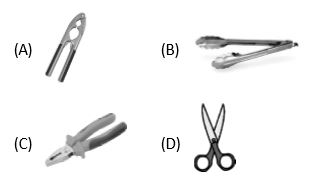

<!DOCTYPE html>
<html>
<head>
	<meta charset="UTF-8">
	<style type="text/css">
.radio-toolbar input[type="radio"] {
    display:none;
}

.radio-toolbar label {
    display:inline-block;
    background-color:#ddd;
    padding:4px 11px;
    font-family:Arial;
    font-size:18px;
}
.greenColor{color:green}
.radio-toolbar input[type="radio"]:checked + label {
    background-color:#bbb;
}
#visit_return_button{
    background-color:#2a25bd;
    border: 2px solid #2a25bd;
    color: #FFF;
    text-align: center;
    -webkit-border-radius: 4px;
    -moz-border-radius: 4px;
    border-radius: 4px;
    padding: 10px;
    }
    </style>

</head>
 <body>
<script type="text/javascript" src="../../mock_code.js"></script>
<script>

//todo - Read question from notepad
var questions = [
["Which of these is a third class lever?<BR>","A","B","C","D","B"],
["Which one of the following systems is responsible for transporting nutrients in whole part of our body?","Nervous system","Circulatory system","Muscular system","All of these","B"],
["The heaviest and lowermost layer of the atmosphere is called:","Stratosphere","Exosphere","Thermosphere","Troposphere","D"],
["A force can change - ","shape of an object","direction of a moving object","speed of a moving object","all of these","D"],
["What is the job of flowers","make seeds","food for plants","water to the plants","None","A"],
["What carries water to each part of the leaf","roots hair","stem","veins","trunk","B"],
["Geeta touched the memosa plants and they closed,which of the body part she used and identfy the plants are closed","nose","legs","finger","hands","C"],
["How many bones make us our skeleton","206","306","406","506","A"],
["Which type of blood cells helps us to fight diseases","red blood cells","white blood cells","both","none", "B"],
["Force is applied to change the direction of a body","energy","movement","power","none of them","B"],
["Which of the following is not a natural resources","AIR","WATER","PLASTIC","FOREST","C"],
["The upper most fertile layer of earth crest is called","SOIL","HUMUS","METEL","ELEMENT","A"],
["Sunlight and heat are----of ecosystem","BIOTIC","A BIOTIC","NATURAL","INORGANIC","B"],
["Which one is a abiotic factor of a enviornment","DECOMPOSER","CONSUMER","PRODUCER","AIR","D"],
["Shape,size and other features of plants depends upon their","TEMPERATURE ONLY","SOIL TYPE ONLY","AVAILABILITY OF WATER","SURRONDINGS","D"],
["Burning of fossilfuel cause","SOUND POLLUTION","AIR POLLUTION","WATER POLLUTION","SOIL POLLUTION","B"],
["Food chain start with","RESPIRATION","DECOMPOSING","DECAY","PHOTOSYNTHESIS","D"],
["Living creatures are various kind are called","ORGANISM","POPULATIONS","SPECIES","ANIMALS","A"],
["Pines,deoder and oak are the plants found in/on","WATER","DESERT","PLAIN","MOUNTAIN","D"],
["What is a pull or push an object called as","GRAVITATION","FORCE","PULL AND PUSH","PRESURRE","B"],
["When force produce motion,it is said that---is done","MOMENTUM","POWER","WORK","ENERGY","C"],
["Temperature change in with change in","HEAT ENERGY","VELOCITY","MAGNITUDE","VIBERATION","A"],
["Which type of energy prossessed by the object in figure below","GRAVITIONAL ENERGY","KINETIC ENERGY","ELASTIC ENERGY","POTENTIAL ENERGY","B"],
["The SI unit of work is called","CALORIES","NEWTON","JOULE","POWER","C"],
["Motion imparted to objects due to the","ACTION OF FORCE","ACTION OF PRESSURE","ACTION OF WEIGHT","ACTION OF GRAVITY","A"],
["Ability to do work is called","MOTION","POWER","ENERGY","FORCE","C"],
["The unit of SI force is called","JOULE","NEWTON","PASCAL","WATT","B"],


]

</script>
<table style="width:100%"><tr>
  <td></td><td style="vertical-align:left"><p id="demo" ></p></td> 
</tr>
</table>
<h2 id="test_status"></h2>
<div id="test"></div>
</body>
</html>
